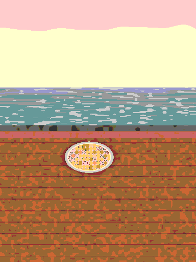

Depth photo
A picture with a depth map, seen through a camera. The focus racks by depth, the camera can move in, and the water moves inside its mask. Without WebGL, in quiet, or with reduced motion, it draws the same frame in 2D and holds still.
Rack focus and dolly

Choosing how to draw.
The picture is a small made-up drawing, painted by fixtures/make.mjs: a plate on a ledge above a sea, with a hand-set depth map. The veranda scene is the real thing.
The same picture in a wide frame
The element covers any frame like object-fit: cover, keeping the point in keep in view.